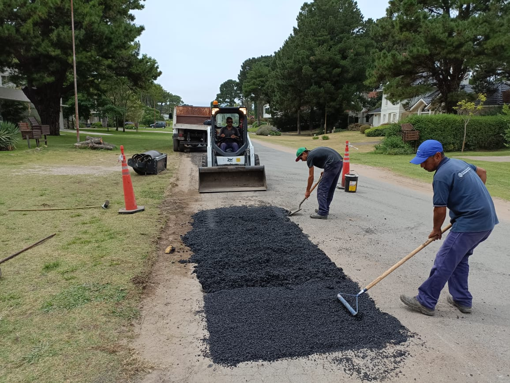

REDUCCIÓN DE LA HUELLA DE C02 EN LA PRODUCCIÓN DE ASFALTO.
Trabajar de forma más eficiente con tecnologías sostenibles y económicas es el desafío de hoy y de mañana. Las soluciones de Benninghoven reducen las emisiones y aseguran los emplazamientos de las plantas de mezcla asfáltica.
Para aumentar la sostenibilidad en la producción de asfalto, Benninghoven ofrece multitud de soluciones innovadoras. Si se tiene en cuenta todo el proceso constructivo de carreteras, desde la extracción de materiales hasta la construcción de la carretera pasando por la producción del asfalto, las empresas explotadoras pueden reducir hasta en un 54 % las emisiones de CO₂. *
Las soluciones inteligentes de Benninghoven incluyen, entre otras, el reciclaje del asfalto, el almacenamiento correcto del mineral blanco y material reciclado, el uso de asfalto de baja temperatura o temperatura reducida, la electrificación de los tanques de betún asfáltico y el uso de energías renovables o combustibles del futuro.

ARGENTINA Y EL NOVEDOSO ASFALTO ECOLÓGICO
Se presentó ayer en el país un novedoso sistema de asfalto ecológico que puede usarse en todos los suelos y climas, acelera los tiempos de ejecución y reduce a la mitad los costos de la pavimentación tradicional.
La licenciada Edith Pacilly, directora de MC Farland Solutions Group y Roberto Lorenzetti, business partner de la firma, convocaron a una conferencia para informar sobre las ventajas de utilizar el producto Landlock, que ya fue usado con éxito en otros países del mundo.
«Es un lanzamiento de un producto que en la Argentina no se encuentra. Es un pavimento ecológico de muy fácil aplicación que podría dar solución a un problema que viene desde hace 50 años: los caminos rurales en la provincia de Buenos Aires o en la Argentina», dijo Pacilly.
Aseguró que «estamos haciendo un esfuerzo muy grande para traerlo al país y hemos hecho pruebas para que puedan ser analizadas más allá de lo que nosotros mostramos».
Señaló que «es un producto muy accesible y está un 50% más barato que una vía de construcción asfáltica».
«Este es un momento en el que la aplicación de las nuevas tecnologías a veces se condiciona por el tema económico o los presupuestos que manejan las empresas. Pero cuando llega una tecnología que no contamina y que a la vez es mucho más barata, no habrían condicionamientos», resaltó.
Añadió que «es un producto que nació para ser utilizado no solo en caminos, sino también en locaciones petroleras, pistas aéreas, tiene muchas aplicaciones. Ya se probó en muchos países de Europa, Asia, África y América».
Pacilly informó que «hicimos una prueba piloto en Pilar, donde hay entre 3 y 4 mil calles de tierra a 50 kilómetros de la Capital» y consideró que en toda la provincia hay un mercado importante para el producto.
Entendió en ese sentido que «si queremos realmente exportar, salir al mercado y crecer en un contexto ecológico, qué mejor sería que la aplicación de algo que se aplica fácilmente, que es 50% más barato, que pueden hacer las mismas cooperativas agrarias, desde el Gobierno y las personas».
Lorenzetti, por su parte, dijo que para la aplicación son necesarias tres máquinas: una apisonadora, una motoniveladora y un regador, con las que se pueden realizar 1.500 metros diarios. Sin embargo, con una máquina especial para el trabajo, «hacemos hasta 5 kilómetros diarios».
Además «es un producto que está certificado con lo que se llama sello verde: es un producto 100% ecológico».
PAVECO Y SU FORMULACIÓN
Es un Superpave modificado con biopolímeros de alto rendimiento formulado con aditivos especiales, que permite fabricar asfalto frio al ser mezclado con agregados minerales o pétreos.
Específicamente diseñado para soportar una amplia gama de temperaturas y climas. Es una solución permanente para la pavimentación, reparación y mantenimiento de autopistas, rutas, puentes, avenidas, calles etc.
ECOPAV es uno de los productos más seguro y efectivo disponible en el mercado Americano.